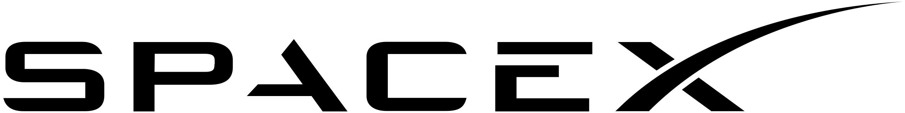
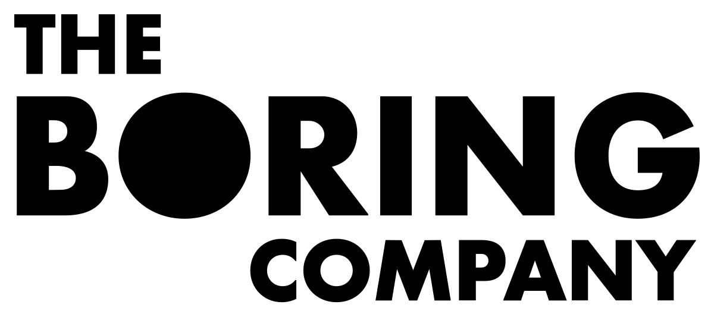
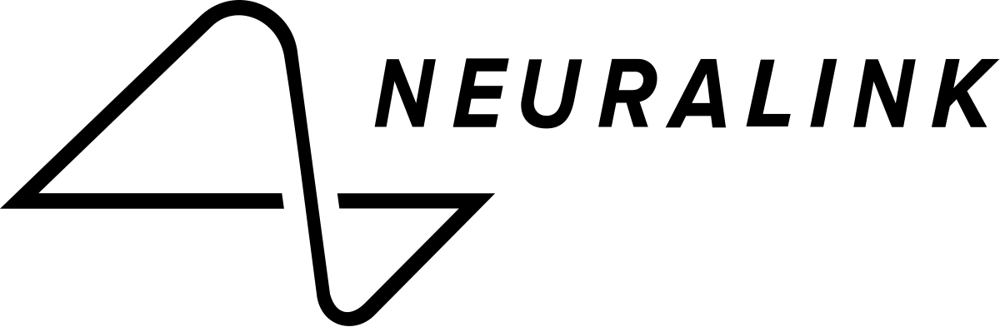
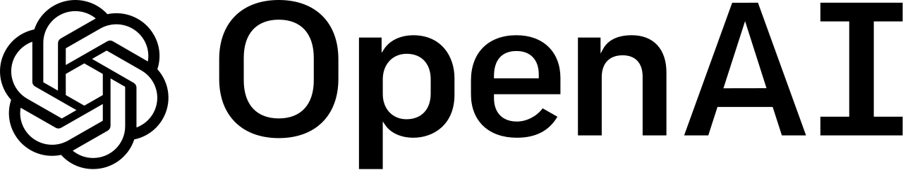

Elon Musk

Empresesas
Tesla

SpaceX
Boring Company
Neuralink
OpenAI
Elon Reeve Musk (Pretoria, 28 de junio de 1971) es un empresario, inversionista y magnate estadounidense de origen sudafricano. Es el fundador, consejero delegado e ingeniero jefe de SpaceX; inversor ángel, CEO y arquitecto de productos de Tesla, Inc; fundador de The Boring Company; y cofundador de Neuralink y OpenAI. Con un patrimonio neto estimado en unos 252 mil millones de dólares en abril de 2022,2 Musk es la persona más rica del mundo según el índice de multimillonarios de Bloomberg y la lista de multimillonarios en tiempo real de Forbes.34
Musk nació de madre canadiense y padre sudafricano blanco, y se crio en Pretoria (Sudáfrica). Estudió brevemente en la Universidad de Pretoria antes de trasladarse a Canadá a los 17 años. Se matriculó en la Universidad de Queen y se trasladó a la Universidad de Pensilvania dos años después, donde se graduó en Economía y Física. En 1995 se trasladó a California para asistir a la Universidad Stanford, pero en su lugar decidió seguir una carrera empresarial, cofundando la empresa de software web Zip2 con su hermano Kimbal. La empresa fue adquirida por Compaq por 307 millones de dólares en 1999. Ese mismo año, Musk cofundó el banco online X.com, que se fusionó con Confinity en 2000 para formar PayPal. La empresa fue comprada por eBay en 2002 por 1500 millones de dólares.
En 2002, Musk fundó SpaceX, fabricante aeroespacial y empresa de servicios de transporte espacial, de la que es CEO e ingeniero jefe. En 2004, se unió al fabricante de vehículos eléctricos Tesla Motors, Inc. (ahora Tesla, Inc.) como presidente y arquitecto de productos, convirtiéndose en su consejero delegado en 2008. En 2006, ayudó a crear SolarCity, una empresa de servicios de energía solar que posteriormente fue adquirida por Tesla y se convirtió en Tesla Energy. En 2015, cofundó OpenAI, una empresa de investigación sin ánimo de lucro que promueve la inteligencia artificial amigable. En 2016, cofundó Neuralink, una empresa de neurotecnología centrada en el desarrollo de interfaces cerebro-ordenador, y fundó The Boring Company, una empresa de construcción de túneles. También acordó la compra de la importante red social estadounidense Twitter en 2022 por 44 000 millones de dólares. Musk también ha propuesto el Hyperloop.
Ha sido criticado por hacer declaraciones poco científicas y controvertidas. En 2018, fue demandado por la Comisión de Bolsa y Valores de Estados Unidos (SEC) por tuitear falsamente que había conseguido financiación para una adquisición privada de Tesla. Llegó a un acuerdo con la SEC pero no admitió su culpabilidad, renunciando temporalmente a su presidencia y aceptando limitaciones en su uso de Twitter. En 2019, ganó un juicio por difamación presentado contra él por un espeleólogo británico que asesoró en el rescate de la cueva de Tham Luang. Musk también ha sido criticado por difundir información errónea sobre la pandemia del COVID-19 y por sus otras opiniones sobre asuntos como la inteligencia artificial, las criptomonedas y el transporte público.